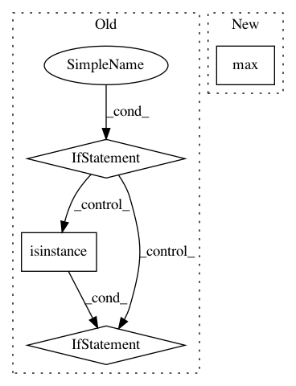

6d895c6a1f32c982ca3d75929bd0f303a16746d5,pynets/plotting.py,,plot_conn_mat,#Any#Any#Any#,12
Before Change
plt.figure(figsize=(10, 10))
plt.imshow(conn_matrix, interpolation="nearest", vmax=float(1.0), vmin=float(-1.0), cmap=plt.cm.RdBu_r)
// And display the labels
if rois_num < 100:
if all(isinstance(item, int) for item in label_names) is False:
plt.xticks(range(len(label_names)), label_names, size="xx-small", rotation=90)
plt.yticks(range(len(label_names)), label_names, size="xx-small")
else:
plt.xticks(range(rois_num), rotation=90)
plt.yticks(range(rois_num))
plt.grid(False)
plt.tight_layout()
plt.savefig(out_path_fig, dpi=dpi_resolution)
plt.close()
After Change
dpi_resolution = 500
conn_matrix = np.array(np.array(thresholding.autofix(conn_matrix)))
[z_min, z_max] = -np.abs(conn_matrix).max(), np.abs(conn_matrix).max()
rois_num = conn_matrix.shape[0]
if rois_num < 100:
plt.gca().set_xticks(size="xx-small")
plt.gca().set_yticks(size="xx-small")
In pattern: SUPERPATTERN
Frequency: 3
Non-data size: 4
Instances
Project Name: dPys/PyNets
Commit Name: 6d895c6a1f32c982ca3d75929bd0f303a16746d5
Time: 2018-08-28
Author: dpisner@utexas.edu
File Name: pynets/plotting.py
Class Name:
Method Name: plot_conn_mat
Project Name: SINGROUP/dscribe
Commit Name: 097217a383e91ea4d11448a55dff79c748cf641d
Time: 2017-08-08
Author: lauri.himanen@aalto.fi
File Name: describe/utils/stats.py
Class Name:
Method Name: system_stats
Project Name: mne-tools/mne-python
Commit Name: 7c1233ba612bdb08d640c924ef4220b2fe13fb71
Time: 2020-09-25
Author: larson.eric.d@gmail.com
File Name: mne/io/reference.py
Class Name:
Method Name: add_reference_channels